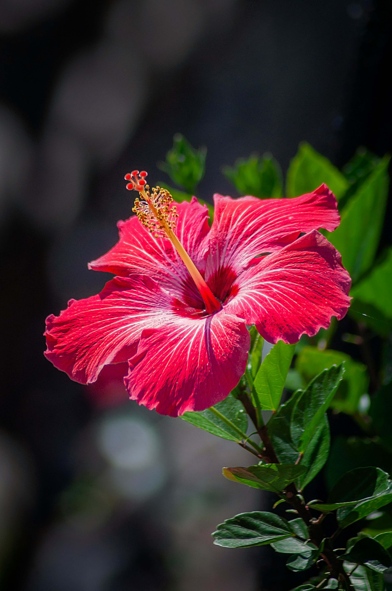

Hibiscus is a flowering plant that belongs to the family Malvaceae, also known as mallow family. The Hibiscus flowers are large and showy, and the genus grows into herbs, shrubs or small trees. There are more than hundred species found that are used throughout the world as food and medicine.
The hibiscus flower is one of the most recognizable flowers due to its color, size, and overall beauty. Keep in mind that hibiscus is an entire genus of plants, and there are actually over 300 species! Of all the different species of hibiscus, they are mostly found in the tropical regions of the world.
Uses
Hibiscus is used for treating loss of appetite, colds, heart and nerve diseases, upper respiratory tract pain and swelling (inflammation), fluid retention, stomach irritation, and disorders of circulation; for dissolving phlegm; as a gentle laxative; and as a diuretic to increase urine output.